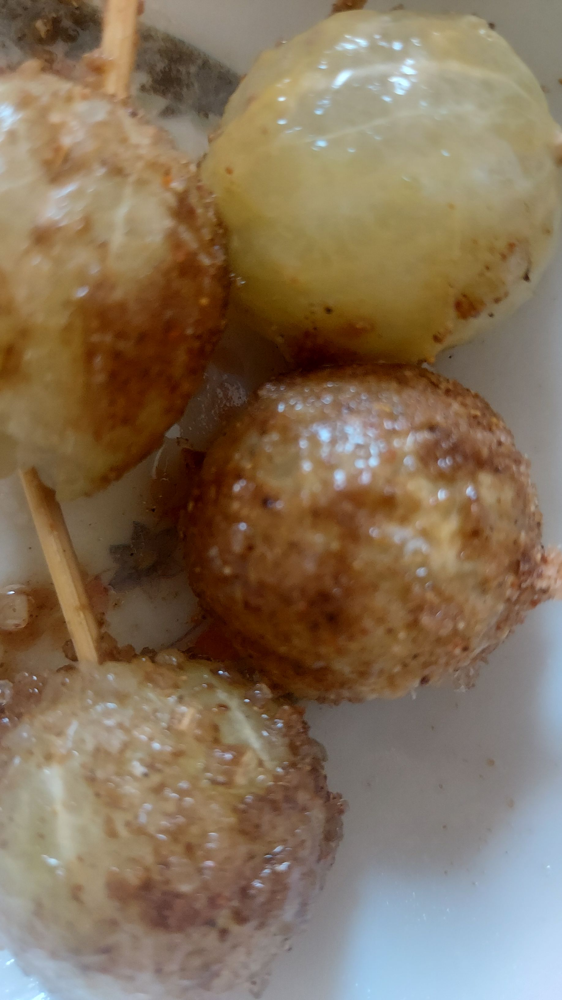

Sour Bomb Recipe

Description
This quick, 3-ingredient snack blends the intense sourness of fresh lemon with the sweetness of granulated sugar and the savory, tangy punch of chaat masala. It is a perfect palate cleanser and a burst of instant refreshment.
- Prep Time: 5 minutes ⏱️
- Difficulty: Super easy 😝
- Flavour Profile: Sour, sweet, salty and spicy
🛒 Ingredients
- Lemon: 1 large lemon, fully peeled
- Lemon Extract: 1/2 tbsp
- Chaat Masala: 1-2 tsp
- Black Salt: A small pinch (optional)
- Granulated Sugar: 1-2 tbsp
Step-by-Step Instructions
- Peel the Lemon: Carefully remove the entire outer skin and white pith from the whole lemon.
- Infuse with Extract: Drizzle the 1tbsp of lemon extract evenly over the surface of the whole peeled lemon to get the other ingredients sticked to it well.
- Create the Coating Mix: In a small bowl, thoroughly combine sugar, chaat masala and black salt.
- Coat the Lemon: Insert a toothpick in the lemon. Then, roll the lemon over the coating mix. Ensure the whole lemon is evenly coated.
Enjoy the sour bombs! 💣
Home